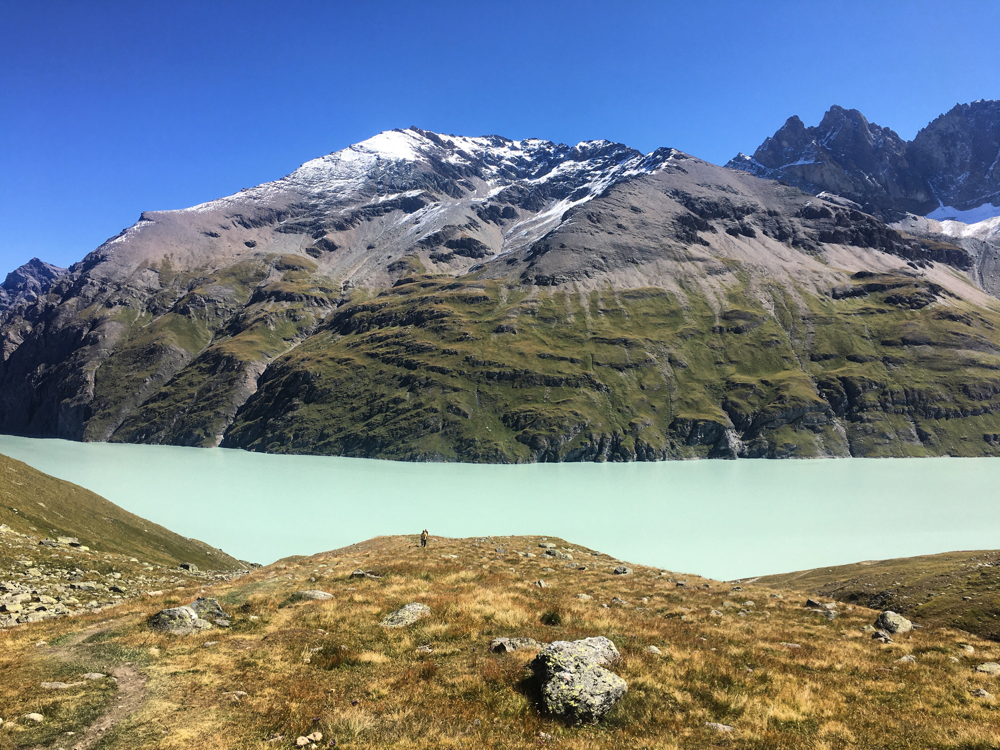

☰
RIEDHIKE
SENTIER DES BOUQUETINS - HÉRÉMENCE, VALAIS
07.09.2020
Difficulty: Medium
Distance: 11km
Duration: 4h20
Route:
Train to Sion
Postbus to the Barrage de la Grande Dixence
Hike: Sentier des Bouquetins loop
Postbus to Sion

Lac des Dix - 2365m




Lac des Dix and Mont Blanc de Cheilon - 3870m (highest peak on the picture)

Col des Roux - 2811m
Can you spot all the alpine ibexes :)


Cabane des Prafleuri - 2641m

Barrage de la Grande Dixence - 2365m
World's highest gravity dam
Construction 1951-1961
Height 285m - Weight 15mio t
Water impoundment 400 000 000m3